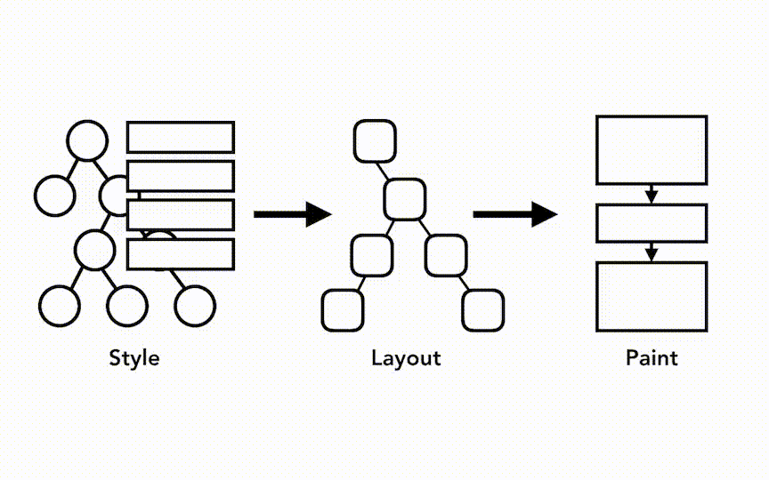
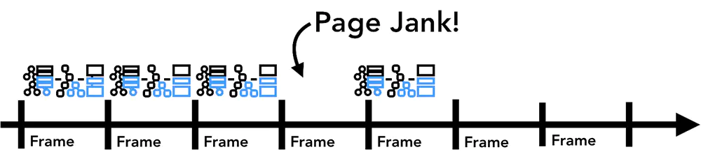
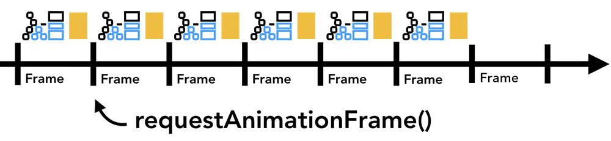

绘制
在绘制阶段，系统会遍历渲染树，并调用（浏览器内部）渲染器的 paint 方法，将渲染器的内容绘制成位图。
绘制工作是使用用户界面基础组件完成的。你所看见的一切都会触发 paint。包括拖动滚动条，鼠标选择中文字等这些完全不改变样式，只改变显示结果的动作都会触发 paint。
paint 的工作就是把文档中用户可见的那一部分展现给用户。paint 是把 layout 和样式计算的结果直接在浏览器视窗上绘制出来，它并不实现具体的元素计算，只是 layout 后面的那一步。
绘制顺序
CSS2 规范 定义了绘制流程的顺序。绘制的顺序其实就是元素进入 堆栈样式上下文 的顺序。这些堆栈会从后往前绘制，因此这样的顺序会影响绘制。块呈现器的堆栈顺序如下：
- 背景颜色（
background-color） - 背景图片（
background-image） - 边框（
border） - 子代
- 轮廓（
outline）
在样式发生变化时，浏览器会尽可能做出最小的响应。因此，元素的颜色改变后，只会对该元素进行重绘；元素的位置改变后，会对该元素及其子元素（可能还有同级元素）进行布局和重绘；添加 DOM 节点后，会对该节点进行布局和重绘。一些重大变化（例如增大 <html> 元素的字体）会导致缓存无效，使得整个渲染树都会进行重新布局和绘制。
更新渲染管道
渲染管道中最重要的事情是：每个步骤中，前一个操作的结果用于后一个操作创建新数据。例如，如果布局树中的某些内容发生改变，需要为文档的受影响部分重新生成 绘制 指令。
如果要为元素设置动画，则浏览器必须在每个帧之间运行这些操作。大多数显示器每秒刷新屏幕 60 次（60 fps），当屏幕每帧都在变化，人眼会觉得动画很流畅。但是，如果动画丢失了中间一些帧，页面看起来就会卡顿（Janky）。
即使渲染操作能跟上屏幕刷新，这些计算也会在主线程上运行，这意味着当你的应用程序运行 JavaScript 时动画可能会被阻塞。

你可以将 JavaScript 操作划分为小块，并使用 requestAnimationFrame() 在每个帧上运行。
有关此主题的更多信息，请参阅 Optimize JavaScript Execution。你也可以在 Web Worker 中运行 JavaScript 以避免阻塞主线程。
重排
重排（Reflow，也叫回流）指的是当浏览器某个位置的布局发生了变化，浏览器就会重新从根部开始递归向下计算该节点及其子孙节点的布局，依次计算所有节点的几何尺寸和位置。
正如上文所述，当 DOM 的结构发生了改变，需要从生成 DOM 这一步开始，重新经过 样式计算、生成布局树、建立图层树、再到 生成绘制列表 以及之后的显示器显示整个渲染过程走一遍，开销是非常大的。
在重排过程中，可能会增加一些渲染器，如文本字符串。DOM 树里的每个节点（内部）都会有 reflow 方法，一个节点的重排很有可能导致子节点，甚至父节点以及同级节点的重排。
重排后，浏览器会重新绘制受影响的部分到屏幕可视区域，该过程称为重绘。另外，DOM 变化不一定都会影响几何属性，比如改变一个元素的背景色不影响宽高，这种情况下只会发生重绘，代价较小。
重排几乎是无法避免的。现在界面上流行的一些效果，比如树状目录的折叠、展开（实质上是元素的显示与隐藏）等，都将引起浏览器的重排。鼠标滑过、点击等用户交互事件，只要这些行为引起了页面上某些元素的占位面积、定位方式、边距等属性的变化，都会引起它内部、周围甚至整个页面的重新渲 染。通常我们都无法预估浏览器到底会重排哪一部分的代码，它们都彼此相互影响着。
重排原因
引发重排的根本原因：
- Initial：网页初始化的时候
- Incremental：JavaScript 在操作 DOM 树时
- Resize：元素节点的尺寸改变
- StyleChange：样式属性发生变化
- Dirty：几个 Incremental 的 Reflow 发生在同一个元素的子树上
重排场景
会导致产生重排的场景：
- 网页初始化（Initial）
- 元素内容变化，如输入空间（Incremental）
- 通过脚本增加、删除和修改 DOM 节点（Incremental）
- 改变浏览器窗口大小（Resize）
- 计算
offsetWidth和offsetHeight等（Resize） - 设置 style 属性（StyleChange）
- 操作 class 属性（StyleChange）
- 样式表变动（StyleChange）
- 改变文字大小（StyleChange）
- 激活伪类，如
:hover（StyleChange）
浏览器并不会在我们进行上述操作时立即进行重排，浏览器会积攥一批 reflow 后批量进行重排。
不过有的操作会让浏览器立马进行重排，比如 窗口缩放，改变了页面默认的字体，或者说 获取以下这些值。
offsetTop、offsetLeft、offsetWidth、offsetHeightscrollTop、scrollLeft、scrollWidth、scrollHeightclientTop、clientLeft、clientWidth、clientHeight- IE 中的
getComputedStyle()和currentStyle
触发页面重新布局的样式属性：
- 盒子模型相关属性
- 定位属性及浮动相关属性
- 改变节点内部文字结构的相关属性
width top text-align
height bottom vertical-align
padding left line-height
margin right overflow
display position font-family
border float font-size
border-width clear white-space
min-height
min-width
优化方案
减少重排的方案：
- 不要通过父级来改变子元素样式，最好直接改变子元素样式，改变子元素样式尽可能不要影响父元素和兄弟元素的大小和尺寸
- 减少不必要的 DOM 层级。改变 DOM 树中的一级会导致所有层级的改变，上至根部，下至被改变节点的子节点。这导致大量时间耗费在执行重排上面
- 不要用
table布局的另一个原因就是tables中某个元素一旦触发重排就会导致table里所有的其它元素重排。在适合用table的场合，可以设置table-layout为auto或fixed - 权衡速度的平滑。比如实现一个动画，以 1 个像素为单位移动这样最平滑，但重排就会过于频繁，CPU 很快就会被完全占用。如果以 3 个像素为单位移动就会好很多
- 尽量不要过多的频繁的去增加、修改或删除元素，因为这可能会频繁地导致页面重排，可以先把该 DOM 节点抽离道内存中进行复杂的操作然后再
display到页面上 - CSS 里不要有表达式
- 不要逐条地修改 DOM 样式：与其这样，不如预先定义好 CSS 的
class，然后修改 DOM 的className - 实现元素的动画，对于经常要进行重排的组件，应当要抽离出来，它的
position属性应当设为fixed或absolute - 避免不必要的复杂的 CSS 选择器，尤其是后代选择器，因为为了匹配选择器将耗费更多的 CPU
重绘
重绘（Repaint）遍历所有节点，检测节点的可见性、颜色、轮廓等可见的样式属性，然后根据检测的结果更新页面的响应部分。当渲染树中的一些元素需要更新一些不会改变元素布局的属性，比如只是影响元素的外观、风格、而不会影响布局的那些属性，这时候就只发生重绘。当然，页面首次加载也是要重绘一次的。
光栅： 光栅主要是针对图形的一个栅格化过程。现代浏览器中主要的绘制工作主要用光栅化软件来完成。所以元素重绘由这个元素和绘制层级的关系，来决定的是否会很大程度影响你的性能，如果这个元素盖住的多层元素都被重新绘制，性能损耗当然大。
重绘属性
只触发重绘的属性
color
border-style
border-radius
visibility
text-decoration
background
background-image
background-position
background-repeat
background-size
outline-color
outline
outline-style
outline-width
box-shadow
动态变化
在网页元素发生变化时，浏览器会尽可能做出最小的响应：
- 元素颜色的改变：只会对该元素进行重绘。
- 元素位置的改变：只会对该元素及其子元素（可能还有同级元素）进行布局和重绘。
- 添加 DOM 节点：会对该节点进行布局和重绘。
- 一些重大变化（例如增大
<html>元素的字体）会导致缓存无效，使得整个渲染树都会进行重新布局和绘制。